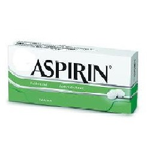

Aspirin (အကိုက်အခဲပျောက်ဆေး)

Aspirin ဆိုတာ ဘာဆေးလဲ
- အက်စပရင်ဆိုတာ Salicylate နဲ့ စတီးရွိုက်ဟော်မုန်းမပါသော ရောင်ရမ်းခြင်းကို သက်သာစေသည့် ဆေးဖြစ်ပါသည်။
- ခန္ဓာကိုယ်ရောင်ရမ်းရာတွင် ထွက်ပေါ်လာသော ဓာတ်ပစ္စည်း ထုတ်လုပ်မှုကို တားပေးပြီး ရောင်ရမ်းခြင်းကို သက်သာစေနိုင်ပါသည်။
- Aspirin ပမာဏ နည်းနည်းကို သွေးကျဲဆေးအနေနဲ့လည်း ရေရှည်စွဲသောက်လို့ရပါတယ်။
ဘယ်နေရာတွေမှာ သုံးလဲ
- အဖျားကျဆေး
- ခေါင်းကိုက်ခြင်း၊ ကြွက်သားများနာကျင်ကိုက်ခဲခြင်း၊ သွားကိုက်ခြင်များတွင် အကိုက်အခဲပျောက်ဆေး အနေနှင့်လည်းသုံးပြီး
- အဆစ်များရောင်ရမ်းခြင်းကို သက်သာစေနိုင်သလို
- နှလုံးသွေးကြောကျဉ်းရောဂါ၊ နှလုံးခွဲစိတ်မှုပြုလုပ်ထားသူများတွင် သွေးမခဲစေရန် သွေးကျဲဆေး အနေဖြင့် သုံးပြီးလေဖြတ်ရောဂါနှင့် နှလုံးဖောက်ခြင်းများကို ကာကွယ်ပေးနိုင်ပါသည်။
ဆေးရဲ့ဘေးထွက်ဆိုးကျိုးဘာတွေရှိလဲ
- မအီမသာဖြစ်ခြင်း၊ရင်ပူခြင်းများဖြစ်နိုင်ပေမယ့်ဆိုးလျှင်ဆေးခန်းပြပါ။
- ရှားပါးပြင်းထန်လက္ခဏာအနေနဲ့ သွေးထွက်လွယ်ခြင်း/ သွေးခြေဥခြင်း၊နားမကြားခြင်း/ နားအူခြင်း၊ ပျို့အန်ခြင်း၊ ပင်ပန်းနုံးနယ်နေခြင်း၊ ခေါင်းမူးခြင်း၊ ဆီးအရောင်ရင့်ခြင်းနှင့် မျက်လုံး၊ အသားဝါခြင်းများဖြစ်နိုင်ပါသည်။
- အစာအိမ်နှင့် အူလမ်းကြောင်း သွေးထွက်သော အခြေအနေထိ ဆိုးကျိုးပြင်းထန်သည်မျိုး ရှားပါသည်။
- အက်စပရင် ဆေးနှင့် မတည့်သောသူလည်း ရှားပါသည်။
ဆေးသောက်လျှင် ဘာတွေ သတိထားရမလဲ
- စတီးရွိုက်မပါသော အကိုက်အခဲပျောက်ဆေး၊ အဖျားကျဆေးများ(Ibuprofen, Naproxen)နှင့် ဆေးမတည့်ဖူးလျှင်၊ သွေးရောဂါရှိလျှင်၊ အသည်း၊ ကျောက်ကပ်၊ အစာအိမ်နာ၊ ဂေါက်အဆစ်ရောင် ရောဂါဖြစ်သောသူများ၊ ဆီးချိုရောဂါရှိသူများ ဆေးမသောက်ခင် ဆရာဝန်နှင့် သေချာတိုင်ပင် ဆွေးနွေးရပါမည်။
- ဆေးလိပ်ဖြတ်ပြီး အရက် လျှော့သောက်ရပါမည်။
- ရေကျောက်၊ တုပ်ကွေး၊ အကြောင်းအရင်း ရှာမရဘဲ နာတာရှည်ဖျားသော ၁၈နှစ်အောက်လူငယ်များတွင် အက်စပရင် မသုံးရပါ။
- ကိုယ်ဝန်ဆောင်မိခင်များ (အထူးသဖြင့် ကိုယ်ဝန်နောက်ဆုံး သုံးလပတ်အမေများ)နှင့် နို့တိုက်မိခင်များတွင် အက်စပရင် လုံးဝမသုံးရပါ။
- ခွဲစိတ်မှုအသေး/အကြီးစား မပြုလုပ်ခင်တိုင်းမှာလည်း ဆေးသောက်နေကြောင်း ကြိုသတိပေးထားရပါမည်။
ဆေးအာနိသင်ဘယ်လိုတွေရှိလဲ
- Mifepristone, Acetazolamide, သွေးကျဲဆေး Warfarin, Heparin, စတီးရွိုက်ဆေး(Prednisolone)နှင့် အခြားတိုင်းရင်းဆေးအမျိုးမျိုးသည် အက်စပရင်ဆေးအာနိသင်ကို ပြောင်းစေနိုင်ပါတယ်။
- အကိုက်အခဲ ပျောက်ဆေးများ ရေရှည်စွဲသောက်နေလျှင် အက်စပရင် ဆေးအရှိန်ကျစေနိုင်ပါတယ်။
- ဆေးမသောက်ခင် ကာကွယ်ဆေးထိုးဖူးလျှင် ဆရာဝန်ကိုကြိုအသိပေးပါ။
ဆေးအရှိန်များသွားလျှင်ဘာဖြစ်မလဲ
ရင်ပူခြင်း၊ ဗိုက်နာခြင်း၊ သတိမေ့ခြင်း၊ နားအူခြင်း၊ ကြွက်သားများ ပျော့ခွေအားမရှိခြင်း၊ အသက်ရှုမြန်ခြင်း၊ အသက်ရှုကြပ်ခြင်း၊ အသက်အန္တရာယ်ရှိခြင်း ဖြစ်နိုင်ပါသည်။
source– ဒေါက်တာအိမ့်ချယ်ရီ